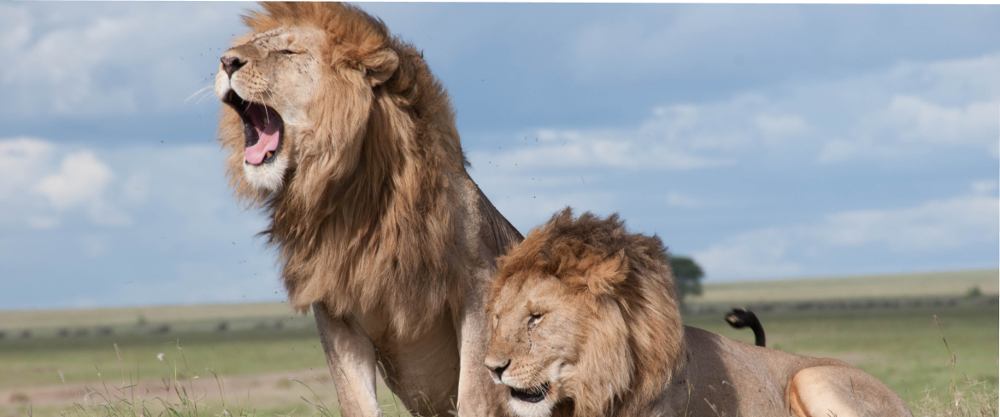

Львы в Family Zoo
Африканский лев
Лев (лат. Panthera leo) — вид хищных млекопитающих, один из пяти представителей рода пантер (Panthera), относящегося к подсемейству больших кошек (Pantherinae) в составе семейства кошачьих (Felidae). Наряду с тигром — самая крупная из ныне живущих кошек, масса некоторых самцов может достигать 250 кг. Трудно сказать достоверно, массивнее ли крупнейшие подвиды льва, чем крупнейшие подвиды тигров. Связано это с тем, что исторические очень крупные веса амурских тигров в большинстве своём признаны недостаточно достоверными. Достаточными данными о размерах и массе представителей крупнейших подвидов льва (например, барбарийском) наука не располагает. Что касается живущих в неволе животных, они часто являют собой смешение разных подвидов. Существует мнение, что львы в неволе несколько превышают тигров в размерах и массе, так же как и обратное ему. Обеспокоенный лев Исторический ареал льва был значительно шире современного: ещё в Раннем Средневековье лев встречался на всей территории Африки, кроме пустынь и тропических лесов, также его можно было увидеть на Ближнем Востоке, Иране и даже в ряде мест южной Европы (к примеру, он обитал на части территории современного юга России, поднимаясь примерно до 45-й северной параллели). В Северной и Северо-Западной Индии лев был обычным хищником. Однако преследование со стороны человека и разрушение среды обитания привели к тому, что в Африке лев сохранился только к югу от Сахары, его ареал в настоящее время сильно сократился. В Азии небольшая популяция существует в Гирском лесу (в индийском штате Гуджарат). До позднего плейстоцена, около 10 000 лет назад, львы были наиболее широко распространёнными крупными млекопитающими на Земле после человека. Их ископаемые остатки найдены в большей части Африки, на территории Евразии от Западной Европы до Индии и в Северной Америке от Юкона до Перу. Известный по наскальным росписям европейский пещерный лев, был, по-видимому, подвидом современного льва.